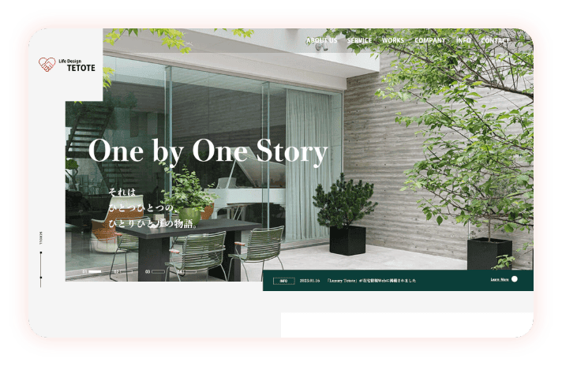
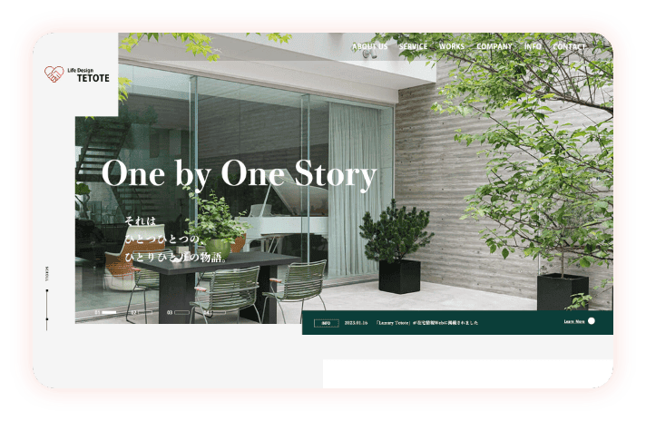
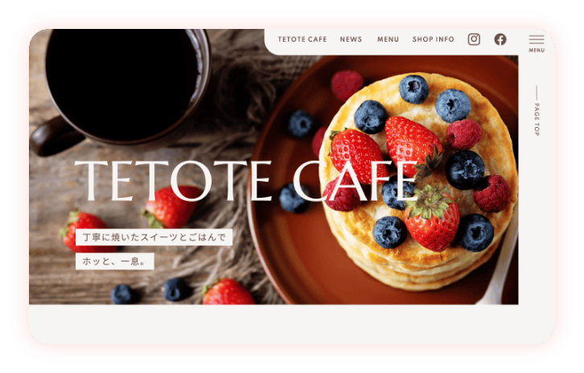
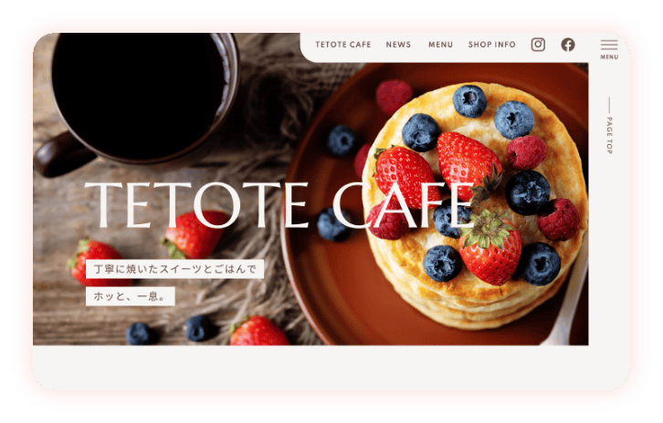
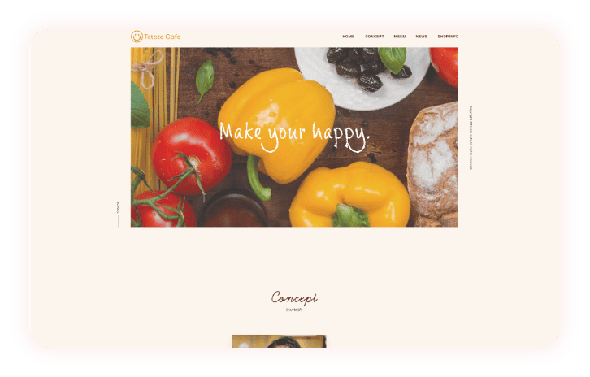
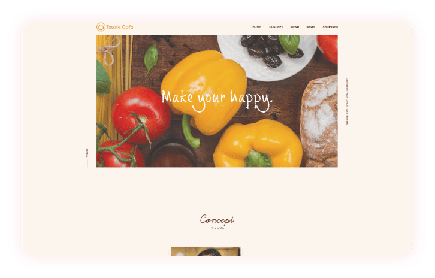

フリーランス・副業向け
Web制作会社が運営する
Tetote Webデザインスクールは、
本気の人に
99.9
%
仕事に繋がることをお約束する
他にはないWebデザインスクール
です。
残業会社員から転身！
フリーランスWebデザイナーになり自由な働き方を
叶えられました！
PCなし、知識、経験ゼロで正直、不安でした。
でも初歩的なソフトの使い方から自分のペースで学べるのがよかったです。
今ではWEBデザイナーへ転身し、通勤や残業から解放されて大満足です。
ほぼ未経験だった僕でも今は、デザインのお仕事のみで生活ができるまでになりました！
スキルだけ学べるスクールはたくさんありますが、仕事に繋がらないと意味がないと思っていたので、未経験スタート、そして仕事に繋がるというコンセプトの自分の理想とするスクールに出会えて本当によかったです。
最高月収100万円達成！
Webデザイナー講座卒業後
2ヶ月で退職して
フリーランスになりました！
独学で勉強していたので、現役デザイナーから直接もらえる添削サポートがとてもわかりやすく、とても自信につながりました。
独立後、6ヶ月くらいで月収100万円になったときはすごく嬉しかったです。
好きな美容のお仕事をしな
がら
WEBデザイナーを副業
としてスタートできました！
コロナ禍で急に将来への不安を感じ「在宅、オンラインできる仕事」を探し始めたのがきっかけです。
今の仕事も好きなので辞めずに副業でもWEBデザインができるようになりました。
今の働き方、そして人生も変えたい！
憧れのWEBデザイナーになってみたい！
WEBデザインスクールがたくさんあって自分にあうスクールが正直わからない
「未経験でもWEBデザイナーになれる」
って本当かな？と不安を感じている
お金をかけてWEBデザインを学んでも、果たして仕事には繋がらないのでは？
あなたが、もし、こんな不安を感じているなら、必ず最後までお読みください。
このサイトでは、WEBデザイナーになる疑問や不安を解消し、全くの未経験からでもWEBデザイナーとして
仕事ができるようになる理由を丁寧にお伝えしていきます。
そして、TetoteWebデザインスクールが、
なぜ99.9％仕事に繋がることにこだわり、
スクール生にそれをお約束しているのかもわかっていただけます。
WEB知識ゼロ、
業界未経験のただの専業主婦が
WEBデザイナーに
はじめまして。
Webデザインスクール
Tetote Web Design Schoolの吉野美涼です。
企業むけWebサイト制作とWEBデザイナーを育成するスクール事業を行っています。
今でこそ、たくさんのWeb制作依頼を頂いておりますが、実は、以前の私はPC苦手、デザインスキルどころか社会人経験もほぼないただの専業主婦でした。
あるとき、「専業主婦としての私の人生、本当にこのままでいいんだろうか」と漠然と不安を感じはじめ、将来、子供がいても家で仕事ができたり、時間と場所にとらわれず、好きな仕事で自由に生きていきたい。
そして、もしPC一台で自分の力で稼げるようになれば、夫の収入に頼らず自由に使えるお金を増やすことができる！と考え、PCの知識ゼロ、デザイン知識、経験ゼロ、全くの素人からWEBデザイナーを目指していったのです。
経験なし、実績なし、
コネなしから、
今ではどんどん仕事が
舞い込むまでに成功できた。
子育ての傍ら一人で本を片手に猛勉強し、なんとかWEBデザインができるようになった後、私に訪れた次の難問は「仕事の獲得方法」でした。
未経験、実績なし、コネもなし、ないないづくしの私は悪戦苦闘しながらも、一つ一つ実績を積んでいき、これまで500件以上のサイト制作をし、従業員2名と業務委託社員を10名抱える会社までに成長してきました。
今、考えると、遠回りをしていたなと感じることもあります。
でも、だからこそ、この経験のおかげで全くの未経験の方がゼロからWEBデザイナーになり、そして仕事を獲得していく方法までも教えることができるのです。
もしもあなたが、今、自分の時間だけなく、自分自身までも犠牲にして
「心の余裕」まで失う日々...を変えたいなら、納得のいかない働き方や仕事に
ジレンマを感じ「もう限界！働き方を変えて、人生変えたい！」と心底思っているなら...
全くの未経験からでも、
私と一緒にWEBデザイナーを
目指してみませんか？
あなたが過去の私と同じように、PC苦手、デザイン未経験でも、自由な働き方で、自分の心が喜ぶ仕事として、ほんの少しでもWEBデザイナーに興味をもっているなら、私は、過去の経験をすべてお伝えして、全くの未経験からスタートし、遠回りせずに最速で確実にWEBデザイナーになる方法と本気の人が確実に仕事にできる理由をお伝えしていきます！


あなたはこんな間違いをしていませんか？
目指す人の
間違った３つの
思い込み


デザインというとセンスが必要というイメージが先行しがちですが、実は一番必要なのはセンスではなく「知識」です。
デザインの基本原則を学びマスターしていくとたった1、2ヶ月で素人デザインから抜け出しプロフェッショナルなデザインを描けるようになります。


Tetote Web Design Schoolは、ＰＣ苦手、未経験の方にも対応したオンライン動画プログラムを用意しています。
働きながら、通勤時間を活用しながら、子育てしながら、、でも学べるように、全て10分程の短い時間で完結する動画にし、自分のペースでひとつひとつ知識とスキルを積み上げながら学べます。


実際には仕事に繋がらない
残念ながら、WEBデザインスクールの中の多くはスキルの習得のみを目的にしているスクールが殆どです。卒業後は自分で仕事を見つけなければならず、せっかくのスキルを活かすことができないまま路頭に迷っている人が多いのが事実です。
確実にWEBデザイナーを目指すなら、仕事に繋がるWEBデザインスクールで学びましょう。
私が運営する
TetoteWebデザインスクールは、
本気の人に99.9
%
仕事に繋がることをお約束している
他にはないWebデザインスクール
です。
WEBデザイナー未経験者でも
99.9％仕事に繋がることをお約束します！
「PCも新しく買って受講料を払って、もし仕事に繋がらなかったらどうしよう...」
未経験から初めてスタートする人が一番不安になる点がここです。
WEBデザイナーを目指しても、卒業後の未来が見えないとなかなか躊躇してしまうのは当然です。
本当に仕事になるのだろうか？
仕事を獲得していくんだろうか？
仕事に繋がらなかった...を
なくしたい。
WEBデザイナースクールが増え、多くの卒業生から「高いお金をかけてスキルは身に着けたけど、正直、仕事にはなってない」、こんな残念な声を聞く機会が増えました。
せっかく学んだスキルを持っていてもそれが使えない、高いお金をかけたけど、仕事に繋がっていないせっかく夢をみてスタートしたのに現実をみてがっかりする、私が99.9％仕事に繋がることをお約束するWebデザインスクールにしたのは、こんな宝の持ち腐れの悲しい経験をしてほしくないとおもっているからです。
Tetote Web Design Schoolはデザインスキル取得にとどまらず次の３つのことをお約束しています。
事例のとおり、多くのスクール生さんがスタート3ヶ月から収入を得始めてることが出来、卒業後は会社員時代の収入を超える方が続出です。
約束する私の想い
先ほどもお伝えしましたが、私は全くの素人でPCの知識もほぼゼロの状態から学んできました。
ただの専業主婦でも想いひとつあれば自分の夢が叶えられる。
私が出来たのだから他の人も必ずできるという根拠のない確信があり、時間を忘れるくらい夢中になれる仕事、自分で決められる自由な働き方、仕事のやりがいと収入も満足できる、そんな仕事と働き方をしたい、この願いを叶えるお手伝いをしたいからです。
私は、悪戦苦闘してきたからこそ、多くの人がつまづくポイントを事前に補えます。
遠回りしてきたからこそ、最速で、しかも確実にWEBデザイナーになれるようにサポートできます。
あなたが望めば、全くの未経験者が最短ルートでWEBデザイナーになれ、センスゼロ、PC苦手の全くの未経験者でも、需要のあるWEB業界で会社員並み、それ以上の収入を得ることも可能です！
まずはWEBデザイナーの道へと一歩、踏み出してみてください。
稼げるようになるロードマップを
「10日間の無料動画レッスン」
で全公開！
| 1日目 | Webデザイナーになれるの？ |
|---|---|
| 2日目 | フリーランスWebデザイナーになる3つのメリット |
| 3日目 | Webデザイナーってどのくらい稼げるの？ |
| 4日目 | Webデザイナーは どんな人に向いている？ |
|---|---|
| 5日目 | ゼロから最短でWebデザイナーになる3つのステップ |
| 6日目 | スキルの勉強法 |
| 7日目 | 最短でスキルを磨く3つのコツ |
|---|---|
| 8日目 | フリーランスWebデザイナーで稼ぐ人の5つの特徴 |
| 9日目 | 未経験からの案件の獲得方法 |
| 10日目 | 売り込まなくてもどんどん仕事が舞い込む5つのポイント |
|---|
動画を見ながら自分の想いを整理し、
Webデザイナーというあなたの夢に向かってスタートできます！
制作実績
過去の卒業生の制作実績になります。
スクールに通うと未経験からでもプロ顔負けのサイトを制作できるようになります！
 


 


 

最短ステップで仕事に繋がる
の
実践的なカリキュラム
- Photoshopの基本操作
- デザインについて
（基本原則や色、フォント等） - バナーのデザインの作り方
- Webサイトのデザインの作り方
- HTML&CSS
- WordPress
- 7種類の営業方法
- 未経験からの営業ステップ
- 案件を獲得するための営業のポイント
- 制作パートナーの探し方
- リピートしていただくためにやること
- サービス内容、価格、戦略を決める
- ポートフォリオ等の営業ツールを作る
- 営業活動をスタートして認知を広める
- 講座受講中に受注に繋げて
制作のフローを経験する

大学卒業後、結婚と出産が理由で入社5ヶ月で退社。
「専業主婦より自分の好きな仕事をして自由に生きていきたい」と強く思うようになり、全くの未経験・知識０から勉強してWEBデザイナーとして起業。
法人7期目を迎え、当時描いていた「時間と場所にとらわれずに好きな仕事をする」という理想の働き方を実現。
今はTetote Web Design Schoolを始め複数の事業を展開し、同じ願いをもつ方の夢を叶えるサポートをしている。
「この講座が、私と同じように、好きなことで自由に働きたいという想いを持っている人のお役に立てれば幸いです。
講座でお会いできることを心より楽しみにしております。」
大学卒業後に金融機関に入社、その後ITベンチャーに転職しWebコンサルタントとしてWeb関係の知識と技術を取得。その中でもWebサイト制作に魅力を感じ、コーディングをメインに勉強を開始、3ヶ月後からすぐ副業として収入を得始める。2020年にフリーランスとして独立し、時間・場所に捉われずに自由な働き方を実現。
「Webを通して自由に働いていきたいという方を応援していますので、フリーランスを目指して一緒に夢を叶えていきましょう。」

新卒で大手食品メーカーの営業職として就職。結婚と転居をきっかけに、場所や時間に柔軟で自由な働き方ができる仕事へキャリアチェンジをしたいと、Webデザインの仕事に興味をもつ。
本業の傍らオンラインで勉強をスタートさせ、半年後には副業でWebデザイナーとして活動スタート。現在はWebデザイナー兼ディレクターとして、代表吉野のもと株式会社TetoteでWeb制作に携わる。
「私と同じように、異業種からキャリアチェンジを考えている方のお役に立ちたいと思っております。
講座でお話しできることを楽しみにしております。」
Webの知識や専門的な作業もしたことが
なくてもできるようになりますか？
この講座では、初心者でもわかりやすい言葉で、デザインソフトの使い方を基礎から動画講座で学んでいただけるようになっています。また、わからない部分に関しては、個別にサポートもしますのでご安心ください。
その他にかかる費用は？
子育てをしながらでも勉強できますか？
勉強時間は？
おすすめのパソコンは？

なりたいアナタへと
未来を
デザイン
しませんか？
最後に...
私が妊娠中の専業主婦になったとき、
時間ができたのでたくさんの本を読みました。
有名な稲盛和夫さんの「生き方」の本に出会ったことで
「働く」事の本当の意味を知りました。
働くことは、自分の生活のためだけでなくて、人のため、
そして世の中のためになるんだと、また、働くことで自分を成長させることができるのだと、そう書いてありました。
「働く」ことを短い期間で辞めた私はまた働きたくなりました。
そして、子供がいても働き続けられる、働くことで自分らしさを実感し発揮できる方法として起業する道を選びました。
正直、子育てしながらゼロからの一人起業は心細いこともありました。
でも、それ以上に、チャンスを掴んでやってみる、もし失敗してもそこから学べば自分は成長する、この考え方が、私を前に進ませてくれました。
専業主婦としての人生も選ぶこともできたけれど、私は一度きりの人生、自分自身を喜ばせ輝かせる生き方を選びました。
もし、今、納得のいかない働き方で悩んでいたり、自分を活かせない仕事で苦しんでいるなら、私と一緒にWEBデザイナーの道を目指してみませんか？
あなたが選べは、働き方だけでなく、人生も変えられます。

3件のwebサイト
制作を受注しました！
困った際の質問にも迅速にご対応いた
だけて、大変助かりました。